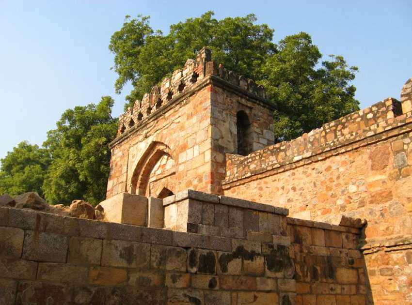

"CITY IS FAMOUS FOR WHAT?"
Ludhiana (Punjabi pronunciation: [lʊdiˈɑːnə] ) is the most populous and the largest city in the Indian state of Punjab.[9] The city has an estimated population of 1,618,879 as of the 2011 census and distributed over 310 km2 (120 sq mi),[6] making Ludhiana the most densely populated urban centre in the state.[10] It is a major industrial center of Northern India, referred to as "India's Manchester" by the BBC.[11] It is also known as the Commercial capital of Punjab.[12][13][14]
It stands on the old bank of Sutlej River, that is now 13 kilometres (8.1 mi) to the south of its present course. The Union Ministry of Housing and Urban Affairs has placed Ludhiana on the 48th position among the top 100 smart cities[15] and has been ranked as one of the easiest city in India for business according to the World Bank.
HISTORY
Ludhiana was founded in 1480 by members of the ruling Lodhi dynasty of the Delhi Sultanate.[16] The ruling sultan, Sikandar Lodhi, dispatched two ruling chiefs, Yusuf Khan and Nihad Khan, to re-assert Lodhi control. The two men camped at the site of present Ludhiana, which was then a village called Mir Hota. Yusuf Khan crossed the Sutlej and established Sultanpur, while Nihad Khan founded Ludhiana on the site of Mir Hota.
The name was originally Lodhi-ana", meaning "Lodhi town", which has since shifted from "Lodiana" to the present form of Ludhiana.[17] The Lodhi Fort, or "Purana Qila", is the only surviving structure in the city from this period; located in the neighbourhood of Fatehgarh, it was well-maintained under Ranjit Singh and the British after him, but then fell into disrepair. It was declared a state-protected monument in December 2013.[18]
The Semi Centennial Celebration of the American Presbyterian Lodiana Mission was held in Ludhiana from 3–7 December 1884.[19]
Ludhiana's Old City includes landmarks like the Lodhi Fort, Daresi Grounds, The Clock Tower, & Sood Family Haveli.
The Sood Family Haveli
The Sood Family Haveli is one of the last Havelis in all of Ludhiana.
Geography
Ludhiana is located at 30.9°N 75.85°E.[20] It has an average elevation of 244 metres (801 ft). Ludhiana City, to its residents, consists of the Old City and the New City. The new city primarily consists of the Civil Lines area which was historically known as the residential and official quarters of the colonial British encampment.
The land dips steeply to the north and the west where, before 1785, the river Sutlej ran.[citation needed]
The Old Fort was at the banks of the Sutlej (and now houses the College of Textile Engineering). Legend has it that a tunnel connects it to the fort in Phillaur– although why this should be is debatable, as the Sutlej was the traditional dividing line between the principalities, often occupied by enemy forces (see History section).
The ground is of yellow sandstone and granite, forming small hillocks, plateaus and dips.[citation needed]
The tree of largest natural extraction was the kikar, or Acacia Indica, but has been supplanted by the eucalyptus, transplanted from rural Australia in the late 1950s by the Chief Minister Partap Singh Kairon.
Gulmohars and jacarandas were planted by the British along the avenues of Civil Lines, as were other flowering trees, while the Old City contains almost no vegetation or parks, except for a few isolated pipal trees, holy to the Hindus, as it is supposed to be the abode of Lord Shiva.
